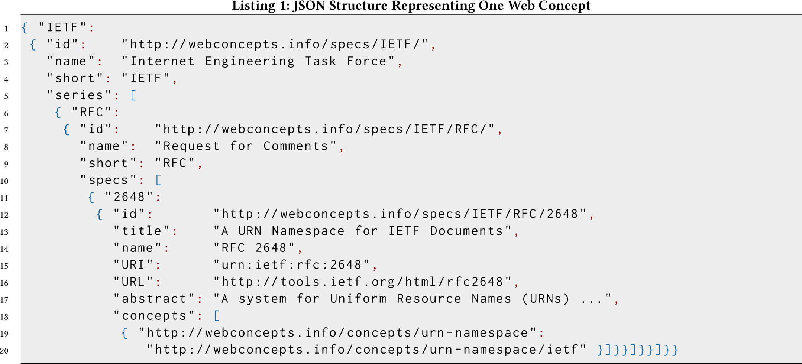
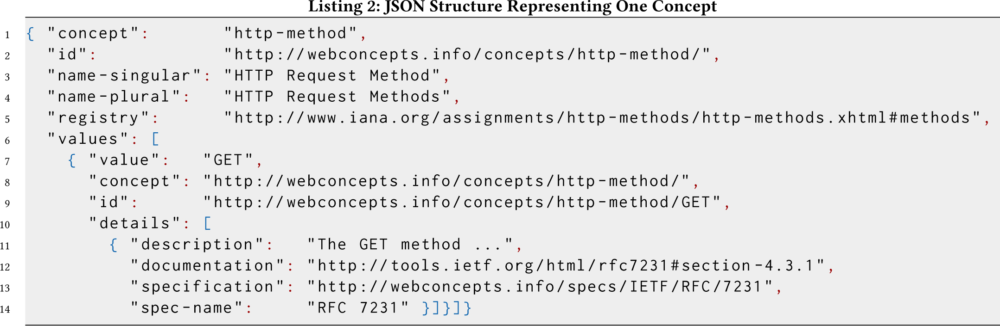

This is a HTML copy of https://doi.org/10.1145/3184558.3188743 originally published by ACM, redistributed under the terms of Creative Commons Attribution 4.0 (CC BY 4.0). The modifications from the original are solely to improve HTML accessability, compatibility, augmenting HTML metadata and avoiding ACM trademark. To reference this HTML version, use:
Permalink: https://w3id.org/oa/10.1145/3184558.3188743
DOI: https://doi.org/10.1145/3184558.3188743
WWW '18: Proceedings of The Web Conference 2018, Lyon, France, April 2018
The Web is based on numerous standards that together make up the surface of the Web: By knowing and supporting those standards, problems can be solved in well-known ways. This general design pattern on the Web applies to APIs in the very same way as it does to the human Web: By using an (evolving) set of standards, API developers benefit by not having to reinvent the wheel, and developers benefit by the same problem being solved in the same way across a variety of APIs. The evolving set of standards for Web APIs can be regarded as a set of building blocks or vocabularies for API design. Web Concepts is a site (webconcepts.info ) and a repository (github.com/dret/webconcepts ) that can be used to manage how within organizations these building blocks are used, thus helping to establish a Web API design culture. The main idea of Web Concepts is to promote reuse of existing standards and technologies, and to therefore make it easier for teams to understand which options are available generally speaking, and maybe which ones are popular choices within their organization.
CCS Concepts: • Information systems → Web services; • Software and its engineering → Documentation; • General and reference → Computing standards, RFCs and guidelines;
ACM Reference Format:
Erik Wilde. 2018. Surfing the API Web: Web Concepts. In WWW '18 Companion: The 2018 Web Conference Companion, April 23–27, 2018, Lyon, France. ACM, New York, NY, USA 6 Pages. https://doi.org/10.1145/3184558.3188743
Web APIs have become an important cornerstone of the Web: they expose services in a programmable way in the similar way as regular Web pages expose services in a human-accessible way.
One of the major differences between Web APIs and the human Web is in terms of diversity and complexity. On the human Web, access is (almost) always through a Web browser. While HTML5 and its support for much more powerful browser applications has resulted in a substantial increase of technical complexity1, diversity is still relatively modest with most Web pages assuming a certain minimal support of CSS and scripting in browsers, and ideally having some fallback strategy when these assumptions are not met.
The picture is rather different for Web APIs, where there are no standards that are universally accepted and supported, other than HTTP being used as the protocol for connecting clients and servers. The rift sometimes goes very deep (such as the difference of opinion whether Web services should better use RPC or REST as the fundamental architectural principle). However, while the details of how Web APIs are designed often diverge, the fact remains that there is some shared foundation because of the universal foundational principles of resource identification via URI [1], and resource interaction via HTTP [6].
Beyond the very foundations of URI/HTTP, the “language” of APIs becomes more varied. Consider the simple question of how structured data is represented: Popular metamodels for structured data nowadays probably are XML [3], JSON [2], and RDF [4]. These already require implementations to employ different toolsets, so that they can parse and process structured data in these representations. But beyond that there often are standardized models at play as well, either as container formats, or as building blocks that are being used to build up larger vocabularies. One way or the other, these models then also become part of the “language” of an API: Users of the API have to understand them and work with them as intended.
In addition to these representation languages, the Web also has a large set of additional vocabularies that Web APIs can use to design and expose their services. One popular example is HTTP caching [5], which after the recent revision of HTTP/1.1 is not part of the core specification anymore, but a separate one that happens to define 5 HTTP header fields, and within its own “caching language” an additional 12 HTTP cache directives (that are used with the Cache-Control HTTP header field), and 7 HTTP warn codes (that are used with the Warning HTTP header field).
This example of HTTP caching shows that there is a whole additional “language” being defined by a specification (in this case IETF's RFC 7234 [5]) that Web APIs can utilize if they want to improve the way how their resources can be used with advanced caching features. Using this “caching language” has the typical two main advantages of using standards:
Through the design of URIs and HTTP and many additional standards, the Web is able to provide this sort of reuse in many different places. This also highlight that while the Web is great because it is built on the shared foundations of URI/HTTP, there still are additional “languages” used on top of these that can help to design better Web APIs, by allowing more reuse, and thus making it easier for API designers to focus on the specific aspects of their APIs that really do need specific design.
As mentioned in the introduction, URI/HTTP is the shared foundation of all Web APIs, and as such there is a foundational uniform interface that is exposed by all Web APIs: When you know a URI then you should be able to “follow your nose” by probing the resource via HTTP OPTIONS, and then continuing from there. While this is true in theory, in the practice of Web APIs many different standards come into play, as illustrated in the introduction.
Thus, for Web APIs it can be very useful for developers to know which standards an API uses (or, using the notion of standards as “building blocks of API languages”, which “vocabularies are combined for defining a specific API”). What this means is that beyond the fact that users can indeed explore an “API's languages” on the fly (for example, interact with all resources of it and keep track of the various HTTP header fields in responses to get an idea of the “HTTP header field language” of that API), this is ineffective and makes it harder for developers to understand the API language.
For example, the HTTP header fields mentioned above are a complex facet of Web architecture: There are around 200 different header fields that are (semi-)officially specified and registered, and there are many more that have been invented by specific Web APIs and are only used in those APIs. So any Web API has many different HTTP header fields it could use, and which ones it does use often is not very easy to find out.
This problem gets harder in API landscapes. Modern organizations have many different teams working on many different APIs, and each of those APIs is the result of a design exercise. With the rise of Microservices, teams get explicitly encouraged to build the APIs that best work for the products they are building.
Microservices try to balance the independence of teams to design and build products, with the larger organizational goal of ending up with an API landscape that has at least some minimal level of coherence. The usual approach nowadays is different from the early days of APIs and SOAP, where the main goal was to create uniformity by standardizing on technologies and toolsets. Experience has shown that this command-and-control approach was too limiting for teams and resulted in slow API development and suboptimal designs.
Microservices try to strike a balance between more independence to increase team velocity, but to still provide teams with the support they need to succeed. For example, a typical example of a team designing a service would be that they might be interested in how similar problems and APIs have been created within the organization. This is asking for the design culture within an organization, and is useful both for the organization (teams can build on established practice) and the teams (teams can build on previous experiences).
In addition, this kind of shared design culture allows the organization to build tooling and support around shared “API languages”. For example, if Web APIs use the same representations for home documents or status reports, then it becomes much easier for the organization to build tooling for entry points or status reports that works across APIs. Establishing this Web API design culture thus helps both the organization, and the individual teams.
Notice, though, that this design culture is fluid: It is the shared set of practices (i.e., API building blocks) that get used by teams, and like anything in IT, these things will change over time. Thus, an ideal representation of the design culture would not just be a static snapshot of the building blocks in use, but would capture how their usage is trending over time.
The main subject of this paper is Web Concepts. Web Concepts is a collection of concepts that together make up a sizable part of the design culture and practice of Web APIs. At the time of writing, it captures 730 different values for 32 concepts. One example for this is the concept of HTTP header fields, of which there are 191 different types. Other examples of concepts are HTTP status codes, URI schemes, and media types.
The collection is necessarily incomplete, on the one hand because for some of the concepts there is a very large set of registered values that probably very rarely will get used in Web APIs (for example, this is the case for media types), and on the other hand because the current collection is based on published or draft specifications, and in many cases, Web APIs add their private concepts but never register or standardize them (such as specific HTTP header fields).
Web Concepts are available at webconcepts.info and on GitHub as github.com/dret/webconcepts, but the main purpose of the data is not so much to provide an authoritative overview of all of the relevant concepts and values, but to serve as a starting point for establishing design culture and practice within organizations.
We will take a closer look at how to reuse Web Concepts in Section 7, and how to use it for tracking API landscape evolution in Section 8. But first it is important to look at how the data is organized, and how it represents the way in which Web concepts are established.
The fundamental model of Web Concepts is very simple: It assumes that concepts and values for them are established by specifications. As the site exists now, the specifications have been taken from a few select organizations, and as the numbers of specifications show, with a rather heavy bias on IETF and W3C:
That specific mix has been influenced by the fact that IETF and W3C create many of the foundational specifications of the Internet and the Web. This could look different if one would look at Web APIs in a specific vertical, that may use numerous specifications from an organization focusing on that vertical. This picture would also look different if it attempted to also represent the concepts and values that may not be “proper specifications”, but are being used across a variety of APIs anyway.
In order to account for this, Web Concepts treats these organizations and their specifications as a configuration. It is easy for new organizations to be added, and after doing so, specifications by these organizations can be added, that define new concepts and values. The main configuration for specifications concerns naming conventions and ways in which they are accessible online and can be identified by URI.
In the same way as organizations can be easily configured, the same is true for concepts as well. At the time of writing, there are 32 concepts, and the number of values for these varies widely, as can be seen here:
Adding Web Concept values combines specifications and concepts. For each specification, a separate resource is created. This resource describes the specification itself (with simple metadata such as a title and an abstract), and then contains a set of values. For each value, it is specified which concept it is for, what the value is, how it is described, and where documentation about it can be found online.
This means that the current state of Web Concepts is represented by 262 specification resources (combining the specifications from the organizations listed above), and that combined these 262 specification resources contain 730 values (combining the values for the 32 concepts listed above).
Adding values is done by adding specifications: A new resource is created that represents the specification and the values it defines. Then the complete Web site (which is currently a static Jekyll site) is regenerated, and the new specification and values get added in the various places where they are listed and linked.
This model is describing how Web Concepts are managed and published as a site. However, the goal of Web concepts is to also serve as a machine-readable source of information about Web concepts, values, and specifications. To accomplish this goal, generating the Web site also generates JSON data that represents specifications and Web concepts/values. These two JSON documents are interlinked, and either one can serve as a starting point, depending on whether one is mostly interested in specifications, or in concepts.

Listing 1 shows the JSON representation of specifications. It is one part of a bigger JSON document that represents all specifications, and just shows one example (of the current total of 262 specifications).
The general structure is one of organizations and specification series, in this case the organization is the IETF and the specification series is their RFC stream of publications. Both the organization and the series have unique identifiers which can be used to cross-reference specifications and concepts, and also serve as human-readable entry points on the Web.
An individual specification then has an identifier within the series, and once again also has a URI for cross-referencing and a human-readable landing page. The specification then has some metadata associated with it, most importantly a title and a name (and an abstract). It also has an URI identifier as assigned by the organization itself, and a (possibly different) URL where the specification can be accessed online.
The core information about the specification is an array of concepts. Each of these concepts is defined by a concept identifier (for cross-referencing with the detailed concept information described in the following section), and a value identifier which also serves cross-referencing purposes. Both the concept and the value identifier are meant to be used in conjunction with the JSON document representing all concepts and values (but they also serve as human-readable entry pages to Web representations).

All concepts and values are represented in a second JSON document, which similar to the specification JSON describing all specifications, describes all concepts and values. Listing 2 shows one excerpt from this JSON document describing one value (of the current total of 730 concept values).
Starting from the currently configured 32 Web Concepts, the JSON document is structured per concept. Each concept has some metadata associated with it, which are its name in singular and plural form, as well as an id (that is both a human-readable resource, but also correlates with the identifier that is used in the specification data). For those concepts that have an officially maintained registry, the link to it is included.
(At this point it is worth mentioning that the official registry in all cases does not contain the exact same entries as those listed on the current Web Concepts site. The reason for this is that the site also lists many values that have been proposed, such as in Internet drafts, but have not yet been officially added to the registry. Similar situations will happen when organizations use Web Concepts as their starting point, but then add concepts and values that they use and thus document for their own API landscape, but that are not intended to ever be entered in the official registries.)
Each concept is represented by an array of values (which are harvested from all specifications). Each of these has an actual value, and then lists both the concept identifier, as well as the value id (which is a URI that can be cross-referenced with the specifications data). The value then also contains details, which is represented as an array as some values are defined in more than one specification. The details contain a description, a link to online documentation, and for easy cross-referencing also identify the specification, both by identifier and by spec-name.
One obvious way how Web Concepts can be used is to serve as helper information in tooling and documentation. For example, when a tool is focusing on REST APIs and has design or programming abstractions that use fundamental Web architecture concepts such as HTTP request methods and status codes, then instead of compiling this information manually, it simply can be reused as provided by Web Concepts.
When using Web Concepts, three options are possible:
None of these options are by definition better than the other. It is simply a question of how much dynamism is required, and how much control.
However, using Web concepts for tracking the evolution of the Web API standards landscape is just a starting point. Things get more interesting when it comes to reusing Web concepts to create a customized version, as described in the following section.
While Web concepts can be simply used to track the landscape of the Web API standards landscape, it also can be used as a starting point for creating a more customized version of the “design language” of APIs in organizations.
One example are special vocabularies that may be used within organizations. In some cases, those may be covered by Web-level concepts such as media types. However, there may be other cases where vocabularies are used at different levels which are not necessarily part of the “general Web API landscape”, such as RDF vocabularies. In that case, it may be useful to add additional concepts, so that these vocabularies can become part of the Web API landscape that can be tracked.
Web concepts make that easy by treating both concepts and specifications as configurable. This means that all that is required is to add a new concept (such as “RDF vocabularies”), and then start adding values identifying specific vocabularies. These values could be identified and defined by organization-level documents, adding to the starting point of standards organizations that are covered by the current Web concepts dataset.
Another example may be a concept such as Kafka topics2. In organizations using the Kafka distributed streaming platform, topics are an essential part of how messages get produced and consumed. However, Kafka itself provides no facility for defining or managing topics, it will simply organize message distribution based on message topics of producers and consumers. An organization might decide to turn Kafka topics into an additional Web concept, making sure that there is a place where topics can be registered when they are defined, and can be looked up to learn which message topics are being used.
An even higher level of sophistication can be achieved with Web Concepts not just tracking concepts and values, but also tracking usage of these values across APIs. This would amount to the ability to answer the question of “which of our APIs are potentially returning the HTTP status code 451?”
This information could be tracked by all of an organization's APIs claiming which Web concepts they are using, and then having some process for consolidating that information to result in usage information across all APIs. One possible way of doing this would be for a decentralized process to crawl usage information from home documents [7] published by individual APIs.
Such a process could even yield historical data to represent trends in the API landscape, such as saying which standards have seen increasing and decreasing adoption across APIs. This information would be useful information for developer teams looking for information on which standards to consider when designing their API: popular ones might be good candidates, while those being on the decline might not be the best design choices anymore. As mentioned earlier, in the end this would create a dynamic picture of which building blocks are being used within an organization's APIs, and how that view changes over time. That level of insight could be an interesting perspective of the constantly evolving best practices of how to design Web APIs.
Web Concepts is first and foremost a resource where certain concepts and agreed-upon values for them can be tracked. It was started as an attempt to track concepts and standards, and to be able to do this across the diverse landscape of organizations that define concepts and values. While the idea itself is not unique, its coverage and extensibility is.
For different scopes, other resources exist. As the oldest and a very rich resource, there is IANA's list of “Protocol Registries”3, which in part overlap with Web Concepts. However, there is the long-standing issue of this data not being exposed in machine-readable format, and the additional issue of it only covering values that are defined by, or have been registered with, IANA. It also lacks the richer data model of Web Concepts with descriptions for all values, and links to the authoritative source.
More targeted efforts exist as well. There is a GitHub repository called “Know your HTTP * well”4, which maintains lists of HTTP encodings, header fields, methods, status codes, as well as media types and link relations. While having the same goal of making this information available for easy consumption as structured data, it is less comprehensive in the concepts it covers.
There likely are other resources out there with similar goal and approaches, but to the best knowledge of this author, no resource comes close in coverage of concepts, variety of sources from which values are gathered, and openness in terms of being able to extend the data easily with new values or concepts.
One of the important questions is how the set of specifications is going to be managed. There probably are some easy answers for new specifications being published by organizations such as IETF or W3C. These should be added to the main repository, and the current process is to do this through PRs and possibly follow-up discussions.
For standards set by smaller organizations, they may not be as visible and widely used, but as long as they are added to the respective IANA registry, they also are very good candidates for inclusion. If they are not registered with IANA, then they might still be valuable to include, as long as there is a published specification that can be referenced and can be consulted by everybody.
For values that are used but neither registered nor defined in a specification, things get more nuanced. For example, many Web APIs use HTTP header fields that only they use, and while it is well-know that they use these fields, there often is not a real specification for them. The current structure of Web Concepts does not allow differing level of authority, so either these would have to be added as specifications, or they would have to be left out. It may be interesting to add such a differentiation to Web Concepts, but like an binary system, it is likely to become problematic in some cases.
Finally, following the general git model of data management, the Web Concepts repository can always be cloned and tweaked as required (as discussed in Section 7). These clones could become entirely disconnected, or their owners could choose to selectively pull updates from upstream, and possible push their local updates to upstream.
Generally speaking, Web Concepts is intended to be open data, and is published under “The Unlicense”5. While the repository is currently privately owned, it can easily be forked by anybody and to anywhere, and with enough interest, it could easily be turned into a GitHub organization (which are free for open source).
This paper describes Web Concepts and how they can be used to serve as a starting point for developers looking to understand which building blocks are popular when it comes to surfing the API Web. The idea of Web Concepts is to provide an open and openly reusable set of building blocks, which can be easily customized to represent an organization's model of when the Web's uniform interface is all about.
Such a view can help both providers and consumers of Web APIs, allowing them to get a clearer picture of the design language of APIs, and to make sure that within an organization, reuse of API building blocks becomes an established and well-supported practice.
1The HTML5 set of specifications and the CSS set of specifications now are well over 200 specifications combined.
2Kafka is an open-source stream processing software platform, where messages are managed in a PubSub way, and message consumption is based on message labels called topics.
3 https://www.iana.org/protocols
4 https://github.com/for-GET/know-your-http-well
This paper is published under the Creative Commons Attribution 4.0 International (CC-BY 4.0) license. Authors reserve their rights to disseminate the work on their personal and corporate Web sites with the appropriate attribution.
WWW '18, April 23-27, 2018, Lyon, France
© 2018; IW3C2 (International World Wide Web Conference Committee), published under Creative Commons CC-BY 4.0 License. ACM ISBN 978-1-4503-5640-4/18/04.
DOI: https://doi.org/10.1145/3184558.3188743